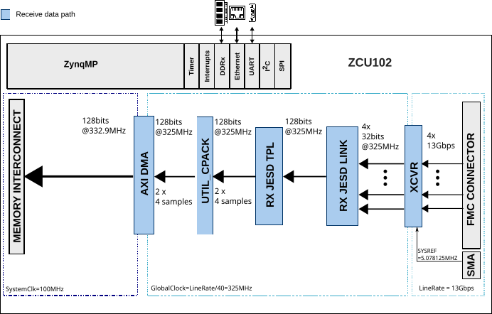

AD9695-FMC User Guide
Introduction
The AD9695 is a dual 14-bit, 1300/625 MSPS analog-to-digital converter (ADC) featuring an on-chip buffer and a sample-and-hold circuit designed for low power, small size, and ease of use. The dual ADC cores feature a multistage, differential pipelined architecture with integrated output error correction logic. Each ADC features wide bandwidth inputs supporting a variety of user-selectable input ranges. The AD9697 ADC can also be evaluated using the AD9695-1300EBZ evaluation board, as the performance is identical except for power consumption.
The AD9695-FMC reference design is a processor-based (e.g. MicroBlaze) embedded system. The design consists of a receive chain that transports the captured samples from the ADC to the system memory (DDR). All cores in the receive chain are programmable through an AXI-Lite interface.
Features
Full-featured evaluation board for the AD9695
JESD204B coded serial digital outputs with support for lane rates up to 16 Gbps/lane
Wide full-power bandwidth supports IF sampling of signals up to 2 GHz
Four integrated wideband decimation filter and NCO blocks supporting multi-band receivers
Flexible SPI interface controls various product features and functions
Programmable fast over-range detection and signal monitoring
Supported Devices
Supported Carriers
ZCU102 – HPC1 Slot
Hardware
Required Hardware
AD9695-1300EBZ evaluation board
ZCU102 carrier
AD-SYNCHRONA14-EBZ clock board
5 x SMA to SMA cable
3 x 50 Ohm DC to 12 GHz SMA termination
Clock Selection
The AD9695-FMC reference design uses the AD-SYNCHRONA14-EBZ as an external clock source.
SYSREF clocks are LVDS
ADCCLK and REFCLK are LVPECL

Synchrona Output Configuration
Only the channels used for clocking are relevant. The remaining channels can be disabled or set to a divided frequency of the source clock.

Connection Table
The following connections are required between the ZCU102 and the AD-SYNCHRONA14-EBZ:
ZCU102 |
AD-SYNCHRONA14-EBZ |
|---|---|
J79 |
CH2_P |
J80 |
CH2_N |
The following connections are required between the AD9695-1300EBZ and the AD-SYNCHRONA14-EBZ:
AD9695-1300EBZ |
AD-SYNCHRONA14-EBZ |
|---|---|
J202 |
CH10_P |
J200 |
CH1_P |
P202 |
CH9_P |
Standalone Evaluation with ADS7-V2
The AD9695-1300EBZ can also be evaluated as a standalone board using the ADS7-V2EBZ FPGA-based data capture kit, without requiring the ZCU102 carrier or HDL reference design.


Equipment Needed
PC running Windows
USB 2.0 port and USB 2.0 high-speed A-to-B cable
AD9695-1300EBZ evaluation board
ADS7-V2EBZ FPGA-based data capture kit
12 V, 6.5 A switching power supply (such as the SL POWER CENB1080A1251F01 supplied with ADS7-V2EBZ)
Low phase noise analog input source and antialiasing filter
Low phase noise sample clock source
Reference clock source
Connector Layout

Warning
The AD9695-1300EBZ is electrostatic discharge (ESD) sensitive. Handle the device with care, and employ conducting wrist straps or antistatic bags when handling the board.
Board Configuration

Before using the software for testing, configure the evaluation boards as follows:
Before connecting the AD9695 to the ADS7-V2, jump the following pins: P307, P308, P309, P311, P304, P305, P312, and P602 (SPI Enable). Do not jump P100 (Power Down/Standby) and P1. Supply the reference clock through the ADS7-V2. Jump P401 towards the inside of the board to power the board via FMC.
Ensure that the data capture board is switched to OFF (S1 on the data capture board). Connect the evaluation board to the data capture board via the FMC connector found on the underside of the board. Connect the power supply and USB cable to the data capture board.
Turn on the ADS7-V2EBZ.
The ADS7-V2EBZ should appear in the Windows Device Manager. If it does not, unplug all USB devices from the PC, uninstall and reinstall ACE, and restart the hardware setup from step 1.
On the AD9695 evaluation board, provide a clean, low-jitter 1300 MHz clock source to connector P202 (preferably via a shielded RG-58 50 Ohm coaxial cable) and set the amplitude to 10 dBm. This is the ADC sample clock.
On the ADS7-V2, provide a clean, low-jitter clock source to connector J3 and set the amplitude to 10 dBm. This is the reference clock for the gigabit transceivers in the FPGA. The REFCLK frequency can be calculated using the following formulae:
Lane Line Rate = M x N’ x (10/8) x Fout / L (bps/lane)
Fout = F_ADC_SAMPLE_CLOCK / Decimation Ratio
N’ = 8 or 16
REFCLK = Lane Line Rate / 20
Default values: N’ = 16, DCM = 1 (full bandwidth mode), M = virtual converters, L = lanes.
On the AD9695 evaluation board, connect a clean signal generator with low phase noise to J101 or J104 via coaxial cable for channels A and B respectively. It is recommended to use a narrow-band bandpass filter with 50 Ohm terminations and an appropriate center frequency.
ACE Setup
Download and install ACE if it is not already installed.
The AD9695 ACE plugin can be found on the AD9695 evaluation board page under the software section, or through ACE’s Plugin Manager (Tools > Manage Plug-Ins).
Once the .acezip file has been downloaded, right-click on it and install the plugin, or double-click to install.
Launch ACE (Start > All Programs > Analog Devices > ACE > ACE).
The AD9695 plugin should appear if installed correctly. If it does not appear, or no board is detected, make sure the ADS7-V2 is powered on and the evaluation board is properly connected.

Click on the plugin to open it and access the Chip View.
Click on the navigation tab labeled AD9695-1300EBZ to open the board view.
Click the Program FPGA button. This will program the FPGA on the ADS7-V2 to communicate with the AD9695-1300EBZ.
Warning
Programming the FPGA will power the AD9695 evaluation board via the FMC connector. Removing any of the board’s power jumpers while the board is on or in operation may cause damage to the board and/or chip. Removing the board while it is being powered via the FMC connector may also cause damage.
Obtaining a Full Bandwidth Capture
Under Initial Configuration, set the clock input to 1300 MHz. Set the number of lanes to 4. Change the number of virtual converters to 1. Change the number of octets per frame to 1. Click Apply to apply the chip settings. Set the reference clock to 325 MHz to match these settings.
The chip view will update to reflect the changes. If any changes are made, the chip can be read by clicking the Read All button.
Issue a data path reset to the AD9695 by clicking its checkbox and clicking Apply Changes. The data path reset bit will automatically self-clear.
If the PLL Lock Lost indicator lights up, reset it by powering down the JESD link using the Link Control dropdown box and clicking Apply Changes.
Enable the link again and click Apply Changes.
Click Proceed to Analysis. This is ACE’s analysis tool for data from the ADC, displaying both sample plots and FFTs. Click on DDCFFT and run one capture.
Channel A and Channel B can be selected individually to display their FFTs.

Figure 8 Example full bandwidth FFT capture with a 533 MHz signal on Channel A
Obtaining a DDC Capture
Under Initial Configuration, set the Chip Operating Mode for two DDCs. The DDC settings will become available. For decimation, select HB1_HB2 Complex (two half-band filters, i.e., decimate-by-4). Set the number of lanes to 1, the number of converters to 4, and the number of octets per frame to 8. Apply the settings.
The chip view will update to reflect the changes. Click on the NCO block to change the Noise Controlled Oscillator’s frequency to 500 MHz. Enable the 6 dB gain for the DDC from the dropdown menu. Click Apply Changes.
Navigate to the second DDC (DDC1) and make the same changes.
In Analysis, run a capture. DDC0 can be selected from Channel A and DDC1 can be selected from Channel B.
HDL Reference Design
The design has one JESD receive chain with 4 lanes at a rate of 13 Gbps. The JESD receive chain consists of a physical layer represented by an XCVR module, a link layer represented by an RX JESD LINK module, and a transport layer represented by an RX JESD TPL module. The link operates in Subclass 1.
The link is set for full bandwidth mode. The transport layer component presents 128 bits on its output on every clock cycle, representing 4 samples per converter. The two receive channels are merged together and transferred to the DDR with a single DMA.
JESD204B Configuration
Parameter |
Value |
|---|---|
Deframer (L, M, F, S, N’) |
L=4, M=2, F=1, S=1, N’=16 |
SYSREF |
5.078125 MHz |
REFCLK |
325 MHz (Lane Rate / 40) |
DEVCLK |
325 MHz |
ADCCLK |
1300 MHz |
JESD204B Lane Rate |
13 Gbps |
Block Diagram

HDL Source Code
HDL Documentation
Quick Start
Hardware Setup

Connect the AD9695-1300EBZ to the ZCU102 FMC HPC1 connector.
Connect the AD-SYNCHRONA14-EBZ clock board to the AD9695-1300EBZ and ZCU102 per the connection tables above.
Connect SMA terminations to unused SMA connectors.
Building the HDL Project
The bitstream must be built from source. Clone the HDL repository and build the ZCU102 project:
cd hdl/projects/ad9695_fmc/zcu102
make
A comprehensive build guide is available in the HDL User Guide.
Verifying the Design
After booting Linux on the ZCU102, verify that the IIO device is present:
root@analog:~# iio_info | grep iio:device
iio:device0: ams
iio:device1: axi-ad9695-hpc (buffer capable)
Troubleshooting
Evaluation Board Not Functioning Properly
It is possible that a board component has been rendered inoperable by ESD, removing a jumper during powered operation, accidental shorting while probing, etc. Check the supply domain voltages of the board while it is powered:
Domain |
Jumper |
Test Point |
Approx. Voltage |
|---|---|---|---|
AVDD_0P9 |
P307 |
TP303 |
0.95 V |
AVDD_1P8 |
P308 |
TP304 |
1.80 V |
AVDD_BUF |
P309 |
TP305 |
2.50 V |
DRVDD_0P9 |
P304 |
TP301 |
0.95 V |
AVDD_1P8_PLL |
P311 |
TP306 |
1.80 V |
DVDD_0P9 |
P305 |
TP302 |
0.95 V |
AVDD_1P8_SPI |
P312 |
TP307 |
1.80 V |
If a short is detected between any of the supply domains and ground, or an open is detected across fuse chip F401 (next to P401), a component may have been damaged. This may have occurred from jumper or board removal while being actively powered.
No SPI Communication with ADS7-V2
Make sure that the FPGA on the ADS7-V2 has been programmed. A lit LED DS15 (FPGA_DONE) on top of the ADS7-V2 and a powered fan are good indicators of the FPGA being programmed.
Check the common-mode voltage on the JESD204B traces. On the evaluation board, the common-mode voltage should be roughly two-thirds of DRVDD_0P9. On the ADS7-V2, it should be around 1.2 V.
Check TP307 (test point for the AVDD_1P8_SPI supply domain, jumper P312) and make sure it is around 1.8 V.
To test SPI operation, attempt to both read and write to register 0x000A using ACE’s Register Debugger (View > Register Debugger). This register is an open register available for testing memory reads and writes.
All registers reading back as either all ones or all zeros (0xFF or 0x00) may indicate no SPI communication.
Register 0x0000 (SPI Configuration A) reading back 0x81 in ACE may indicate no SPI communication as a result of the FPGA on the ADS7-V2 not being programmed.
Evaluation Board Fails to Capture Data
Ensure that the board is functioning properly and that SPI communication is successful (see previous troubleshooting tips).
Check the Clock Detect register 0x011B to see if the inputted clock is being detected. 0x01 indicates detection, 0x00 indicates no clock detected. Check the signal generator inputting on connector P202. Try checking the common-mode voltage on the clock pins, which should be roughly two-thirds of AVDD_0P9. Try placing a differential oscilloscope probe on the clock pins to see if the clock signal is reaching the chip.
Check the PLL Locked indicator or register 0x056F (PLL Status). If the light is green or the register reads back 0x80, the PLL is locked. If it is not locked:
Check the clock being inputted to connector P202 (in this guide, 1300 MHz).
Check the JESD settings under the Initial Configuration. Reference the AD9695 datasheet for supported lane options.
Check the reference clock and make sure it matches your JESD settings.
Make sure P100 (Power Down/Standby jumper) is not jumped.
Software Support
Linux Device Driver
Driver and device tree source files:
More Information
Support
Analog Devices will provide limited online support for anyone using the reference design with Analog Devices components via the FPGA Reference Designs Forum.